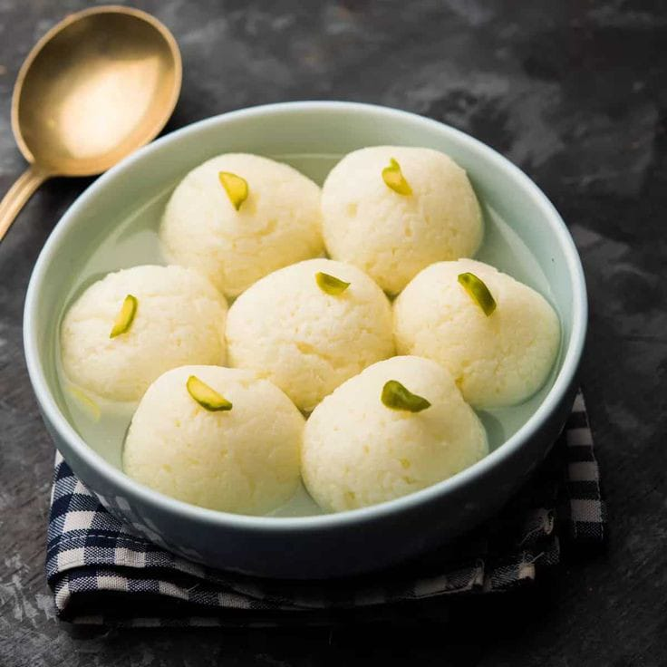

HOME
ABOUT US
SERVICES
SOUTH
NORTH
CHINESE
SNACKS
DESSERTS
CONTACT

RASGULLA
Rasgulla is a syrupy dessert popular in inida.Its a milk based sweet.
Ingredients
1 litre full-fat milk.
1 tablespoon lemon juice or vinegar.
1 cup sugar
1/2 cup water
1/2 teaspoon rose water (optional)
Instructions
Bring the milk to a boil in a large pot over medium heat.
Reduce the heat to low and simmer for 10-15 minutes, or until the milk has reduced by about half.
Remove the pot from the heat and add the lemon juice or vinegar.
Stir constantly until the milk curdles and separates into curds and whey.
Drain the curds in a colander lined with cheesecloth or a clean kitchen towel.
Rinse the curds under cold water until the water runs clear.
Squeeze out as much excess water as possible from the curds.
Divide the curds into small balls, about 1 inch in diameter.
In a large saucepan, combine the sugar and water.
Bring the mixture to a boil over medium heat.
Reduce the heat to low and simmer for 5-7 minutes, or until the sugar has dissolved.
Add the rasgullas to the sugar syrup.
Bring the mixture to a boil, then reduce the heat to low and simmer for 15-20 minutes, or until the rasgullas are cooked through.
Remove the rasgullas from the sugar syrup and let them cool slightly.
Serve hot or cold with your favorite chutney.